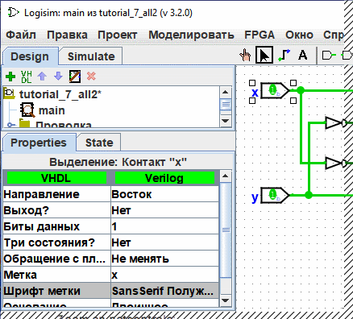

Таблица атрибутов
Большинство компонентов обладают набором атрибутов — свойств, определяющих их поведение, геометрические размеры или внешний вид. Таблица атрибутов служит для просмотра и редактирования этих свойств.
Чтобы увидеть свойства компонента, выберите его на холсте с помощью инструмента «Выбор» ( ). Вы также можете вызвать контекстное меню кликом правой кнопкой мыши по компоненту и выбрать пункт «Показать атрибуты». Кроме того, свойства отображаются при взаимодействии с компонентом инструментами «Нажатие» (
). Вы также можете вызвать контекстное меню кликом правой кнопкой мыши по компоненту и выбрать пункт «Показать атрибуты». Кроме того, свойства отображаются при взаимодействии с компонентом инструментами «Нажатие» ( ) или «Текст» (
) или «Текст» ( ).
).
На рисунке ниже показана таблица атрибутов после выделения входного контакта логического элемента «Исключающее ИЛИ» и пролистывания вниз до свойства Шрифт метки:

Для изменения значения атрибута кликните по нему. Способ редактирования зависит от типа свойства:
- Для выбора шрифтов (например, Шрифт метки) откроется стандартное диалоговое окно настройки шрифта.
- Для текстовых полей (например, Метка) значение редактируется непосредственным вводом с клавиатуры.
- Для перечислений (например, Положение метки) отобразится выпадающий список.
Каждый тип компонента имеет свой уникальный набор свойств. Подробное описание назначения каждого атрибута приведено в «Справке по библиотеке».
Если с помощью инструмента «Выбор» ( ) выбрано несколько компонентов одновременно, таблица атрибутов отобразит только те свойства, которые являются общими для всех выделенных элементов (проводники при этом игнорируются). Если значения совпадающих атрибутов у разных компонентов отличаются, поле останется пустым. Через таблицу атрибутов вы можете изменить свойства всех выделенных компонентов одновременно.
) выбрано несколько компонентов одновременно, таблица атрибутов отобразит только те свойства, которые являются общими для всех выделенных элементов (проводники при этом игнорируются). Если значения совпадающих атрибутов у разных компонентов отличаются, поле останется пустым. Через таблицу атрибутов вы можете изменить свойства всех выделенных компонентов одновременно.